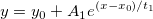

ExpGrow1-FitFunc

時間オフセット付き一相指数増加関数。 x0 は、固定。
数：4
名前: y0, x0, A1, t1
時間: y0 = オフセット, x0 = 中心, A1 = 振幅, t1 = 時定数
下側境界: w > 0.0
上側境界: なし
nlf_expgrow1(x,y0,x0,A1,t1)
FITFUNC\EXPGROW1.FDF
Baseline, Exponential, Origin Basic Functions